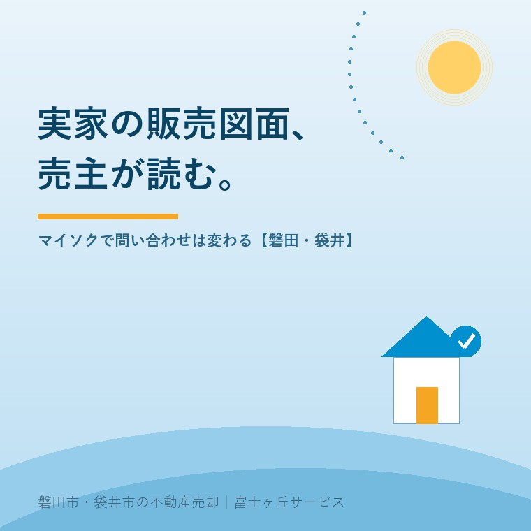

2026年8月15日｜カテゴリ：売却実務／不動産屋の本音

この記事の要点
Q. 実家を売りに出して2か月、問い合わせが1件もありません。値段が高いからだと言われましたが、本当にそれだけでしょうか。
A. 値段は大きな要因ですが、その前に「販売図面（マイソク）を一度ご自分の目で見てください」とお伝えしています。販売図面は、買主が最初に、そしてほとんどの場合唯一目にする1枚の紙です。ところが売主のほとんどが、自分の家の販売図面を見たことがありません。渡されないことも珍しくないからです。写真が曇り空の1枚だけ、間取り図に方位がない、備考欄が空白──これで問い合わせが来ないのは、価格のせいではありません。販売図面は法定書面ではないので、決まった書式はありません。ただし「不動産の表示に関する公正競争規約」と宅地建物取引業法によって、書かなければならないことは決まっています。取引態様、徒歩分数（道路距離80mにつき1分・端数は切り上げ）、市街化調整区域や再建築不可などの特定事項の明示義務。ここを売主が読めるようになると、担当者との会話が変わります。磐田市・袋井市では、介護施設の運営から不動産事業を始めた富士ヶ丘サービスのような地域密着の会社に相談するという選択肢があります。
売却の相談を受けていて、いちばん驚かれるのがこの質問です。
「ご自宅の販売図面、お手元にありますか」
ほとんどの方が「え、なんですか、それは」とおっしゃいます。すでに他社で売りに出している方でも、です。
販売図面──業界では「マイソク」と呼びます。物件の写真、間取り図、地図、価格、面積、そして備考欄を、A4かB4の紙1枚にまとめたもの。これが、あなたのご実家の顔です。
買主は、この1枚を見て「連絡してみようか」を決めます。内覧の前です。現地を見る前です。その意味で、実家の売却は、この紙1枚から始まっています。
今日は、この販売図面を売主の立場から読む方法を書きます。内容は2026年8月15日時点の法令・規約に基づきます。
最初に、身も蓋もない事実をお伝えします。
販売図面には、法律で定められた書式がありません。売買契約書や重要事項説明書のような法定書面ではなく、不動産会社が営業のために作る資料です。
だからこそ、会社によって、担当者によって、出来が驚くほど違います。
同じ家でも、写真の撮り方、間取り図の見やすさ、備考欄に何を書くかで、まったく別の物件に見えます。そして残念ながら、手を抜いても誰にも怒られません。法定書面ではないからです。
ただし、「何を書いてもいい」わけではありません。広告である以上、不動産の表示に関する公正競争規約（表示規約）と宅地建物取引業法の縛りがかかります。ここを知っておくと、売主として何を言えるかが分かります。
手元に販売図面があるなら、まずこの3か所を見てください。
たいてい図面の隅、小さな字で書かれています。「専属専任媒介」「専任媒介」「一般媒介」「売主」「代理」のどれか。
宅地建物取引業法第34条により、宅建業者は広告をするとき、取引態様の別を明示しなければなりません。省略は許されません。ここが空欄の図面は、その時点でルール違反です。
売主の立場では、ここが自社との媒介契約の種類と合っているかを確認します。専任で契約したのに一般と書かれていたら、それは事故です。
ここが、いちばん差が出ます。
販売図面の下部にある、自由に書ける数行。ここに何が書いてあるか。そして、何も書いていないか。
| 備考欄の状態 | 買主側の受け取り方 |
|---|---|
| 空白 | 「特に言うことがない物件なんだな」 |
| 「即入居可」「価格応談」だけ | 「売り急いでいるのかな」 |
| 設備・履歴・周辺が具体的に書いてある | 「ちゃんと聞いてから出しているな」 |
| 短所も書いてある | 「正直だ。話が早そうだ」 |
最後の行が意外に思われるかもしれません。でも本当です。「南側に隣家あり、日照は午後中心」と書かれた図面は、書いていない図面より問い合わせが減りません。減るのは、内覧に来てから落胆される件数のほうです。
売却が長引く物件の販売図面を見せていただくと、備考欄が空白か、テンプレートの1行だけということが本当に多い。この1点だけでも、担当者に依頼する価値があります。
枚数と、撮った時間帯を見てください。
外観1枚だけ、しかも曇りの日の逆光。これでは家の良さは伝わりません。買主が知りたいのは、玄関の広さ、水回りの状態、庭の様子、そして収納です。
内覧で選ばれる家の条件は内覧で選ばれる家の記事に書きましたが、そもそも内覧に呼ばれなければ、その勝負の土俵に上がれません。写真は、土俵に上がるための切符です。
ここからが本題です。販売図面には、書くことが義務づけられている事項があります。不動産公正取引協議会が定める表示規約の「特定事項の明示義務」です。
趣旨はこうです。建築や造成が制限されている物件、物理的な難がある物件は、他より価格が安い。それを書かずに出すと「安くて良い物件」だと誤認させることになる。だから明示させる、という考え方です。
| 状況 | 表示のルール（首都圏不動産公正取引協議会の解説より） |
|---|---|
| 市街化調整区域 | 「市街化調整区域。宅地の造成及び建物の建築はできません。」と16ポイント以上の文字で明示 |
| 接道が2m未満 | 「再建築不可」または「建築不可」と明示。「不適合接道」等のあいまいな表現は不可 |
| 路地状部分（旗竿地） | 土地全体の30％以上を占めるときは割合または面積を明示 |
| セットバック | みなし道路に接する場合は必ず明示。面積が10％以上ならその面積も |
| 傾斜地 | 30％以上、または有効利用が著しく阻害される場合は明示。「法面」ではなく「傾斜地」と書く |
| 高圧線下 | 面積を明示。建築が禁止されているならその旨も。「地役権設定有」だけでは足りない |
| 都市計画道路区域内 | 「都市計画道路区域内」と明確に表示 |
売主として、これをどう使うか。
逆から読むのがコツです。「うちの土地は該当しないのに書かれている」なら訂正を求められます。逆に「該当するのに書かれていない」なら、それは後で必ず問題になります。
調整区域の実家については市街化調整区域の実家の記事を、再建築不可や私道の話は再建築不可・私道の記事をご覧ください。「書かれると売れなくなる」のではありません。書かれていないまま契約に進んだときに、いちばん大きな損をするのが売主です。
細かいところですが、知っておくと図面が読めるようになります。
徒歩による所要時間は、道路距離80メートルにつき1分間を要するものとして算出する。1分未満の端数が生じたときは1分として計算する（切り上げ）。
さらに2022年9月1日の改正で、販売戸数・区画数が2以上の分譲物件では、最も遠い住戸（区画）までの所要時間も併記することになりました。
「駅徒歩12分」は、道路距離で880m超〜960mを意味します。直線距離ではありません。信号待ちも坂道も考慮されていません。実際に歩くともう少しかかる、というのが正しい読み方です。
磐田市・袋井市では、そもそも駅から徒歩圏という物件のほうが少数派です。「磐田駅まで車8分」といった表示のほうが実態に合いますが、こちらは規約上の算出ルールがある表示ではありません。目安として読むものだと理解してください。
地元の物件を扱っていて、備考欄に書くことになりやすいのは、だいたい次のあたりです。
| 項目 | なぜ図面に出てくるか |
|---|---|
| 市街化調整区域 | 旧市町村の集落部・郊外に広く分布。明示義務の対象 |
| 接道が私道／位置指定道路 | 昭和の分譲地・旧集落で頻出。持分の有無まで書けると親切 |
| 農地に隣接／畑が付いている | 宅地と農地が地番単位で混在。農地は別の手続きが要る |
| 擁壁・高低差あり | 丘陵部の造成地。傾斜地の明示に関わる |
| 埋蔵文化財包蔵地 | 市内に広く分布。着工前に届出が必要になる |
| 境界未確定／越境あり | ブロック塀・樹木の越境。決済までに整理が要る |
| 残置物あり／現況渡し | 実家じまい案件で頻出。誰が処分するかを書く |
それぞれの詳しい話は、擁壁は擁壁のある実家の記事、埋蔵文化財は埋蔵文化財包蔵地の記事、残置物は残置物と現況渡しの記事に書きました。
この表を眺めていただくと分かるとおり、磐田・袋井の実家は「備考欄に書くことが多い物件」です。だからこそ、備考欄が空白の販売図面は、その家の説明を放棄しているのと同じことになります。
もうひとつ、売主が確認すべきことがあります。その図面が、ちゃんと他社に届いているかです。
専任媒介・専属専任媒介では、宅建業者は指定流通機構（レインズ）へ物件を登録する義務があります。期限は専属専任で5日以内、専任で7日以内（休業日を除く）。ここは法律上の義務です。
そして2025年（令和7年）1月1日には、宅地建物取引業法施行規則が改正され、取引状況（ステータス）の登録・更新が義務化されました。あわせて登録証明書の交付時に、売主へ確認方法を説明することも義務になっています。
さらに令和7年1月4日から、登録証明書に二次元コードが記載されるようになりました。売主がスマートフォンで読み取れば、自分の物件が今どのステータスで扱われているかを、自分で確認できます。
これは大きな変化です。「ちゃんとやっています」という担当者の言葉を、売主が自分で裏付けられるようになったからです。詳しくはレインズのステータスと囲い込みの記事に書きました。
ここで、あわせてお願いしてみてください。
「レインズに登録した販売図面を、そのままPDFでいただけますか」
この一言で、たいていのことが分かります。すぐ出てくる会社は、出せる自信があるということです。出し渋る会社があったら、その理由を聞いてみてください。
公平に書きます。売主の希望どおりに直せない部分もあります。
| 直せる | 直せない |
|---|---|
| 写真の枚数・撮り直し | 明示義務のある不利な事実（調整区域・再建築不可など） |
| 備考欄の文章 | 登記簿上の面積・地目 |
| 間取り図の見やすさ・方位 | 徒歩分数（80m＝1分の算出ルールがある） |
| アピールする設備・履歴の追加 | 取引態様（媒介契約の種類そのもの） |
| 周辺施設の書き方 | 実際にない設備を「ある」と書くこと |
右の列を消してほしい、というご要望は、お受けできません。不当表示になりますし、なにより契約後に発覚したときに責任を負うのは売主だからです。契約不適合責任の話は契約不適合責任の記事に書きました。
逆に言えば、左の列は全部、頼めば直ります。そして左の列こそが、問い合わせ数を左右します。
値下げの前に、まず左の列を全部やる。私はいつもこの順番でお勧めしています。値下げは一度やると戻せませんが、写真と文章は何度でも直せるからです。値下げ交渉の考え方は値引きと指値の記事を、査定額の作られ方は査定額のからくりの記事をご覧ください。
難しい話をしてきましたが、今日から使える方法はとても単純です。
⑤がいちばん効きます。売主にとって実家は思い出のある家ですが、買主にとっては初対面の物件です。初対面の人がどう感じるか。それを教えてくれるのは、身内よりも、その家を知らない人です。
問い合わせが来ない本当の理由については問い合わせが来ない理由の記事にも書いています。あわせてどうぞ。
当社は、磐田市見付で介護施設を運営するところから不動産の仕事を始めました。ご相談の入口は、たいてい「親が施設に入った」「親を看取った」です。
そういう経緯で売りに出る実家は、備考欄に書くことが多い家です。長く住んだ家には履歴があります。増築、改修、井戸、祠、越境、畑。それを聞き取る時間を取らないと、備考欄は空白になります。
私たちは、販売図面を作る前に、必ずご家族から家の来歴を伺います。介護の相談から入っている分、その時間はもともと持っているからです。
目指しているのは「高く売る」だけではなく、「家族が困らない売却」です。書くべきことを書いた図面で出すこと自体が、あとでもめないための準備でもあります。
価格の話をする前に事実を整理する道具として、ふじがおか実家カルテを用意しています。
ご実家は、あなたにとっては何十年も見てきた家です。でも買主にとっては、A4一枚の紙です。
その紙に、何が書いてあるか。一度だけでいいので、ご自分の目で見てください。直したいところが1か所でも見つかったなら、この記事は役目を果たしたことになります。
ふじがおか実家カルテ｜売り出す前に、書くべきことを洗い出せます
その1枚、ご自分で読んでみましたか。
住所をもとに、用途地域と調整区域の別、道路と接道の状況、農地の有無、擁壁・高低差、埋蔵文化財包蔵地の該当など、販売図面に書くことになる項目を整理して1枚にしてお出しします。作成料0円・入力約1分。申込みだけで売却依頼にはなりません。
本記事は2026年8月15日時点の法令・公正競争規約および国土交通省・不動産公正取引協議会が公表している情報に基づく一般的な解説であり、個別の広告表示の適否を判断するものではありません。表示規約は不動産公正取引協議会ごとに運用の細部が異なる場合があり、また改正されることがあります。個別の物件について何を明示すべきかは、調査結果と物件の状況によって異なりますので、媒介を依頼している宅地建物取引業者にご確認ください。境界の確定は土地家屋調査士へ、登記手続は司法書士へ、税金の取扱いは税理士へご相談ください。個別のご相談は当社までどうぞ。
磐田市・袋井市の実家じまい・相続空き家相談
固定資産税通知書だけでも相談できます
住所があいまいでも、通知書や写真から名義・道路・農地・残置物の確認順を整理します。カルテ申込またはLINEで状況を送ってください。
富士ヶ丘サービス株式会社／静岡県磐田市見付5789番地1／TEL:0538-31-3308／静岡県知事 (2) 第14083号／代表取締役・宅地建物取引士 大石 浩之